Duas incidências
Sempre olhar em duas incidências: uma fratura que quase não aparece de frente fica evidente no perfil.
Da contusão ao politrauma: a diferença entre luxação e fratura, o que é emergência e o que é urgência, como imobilizar e operar, e o que procurar na radiografia de cada região.
Organizada a partir da aula e dos slides, com a linguagem ajustada para leitura autônoma. A legenda de cores está na página 2.
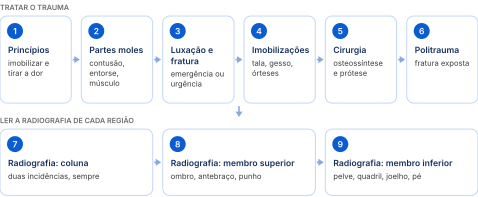
Todo trauma segue o mesmo roteiro: primeiro proteger a lesão e tirar a dor, depois confirmar o que aconteceu e só então decidir o tratamento definitivo, que pode ser com ou sem cirurgia. O alvo final é sempre o mesmo: a pessoa voltar a fazer o que fazia antes.
A aula percorre os traumas do mais simples ao mais grave: contusão, entorse, lesão muscular, luxação, fraturas, lesões associadas e, no topo, o politrauma, a pessoa com várias lesões ao mesmo tempo. Para todos eles vale o mesmo roteiro de tratamento.
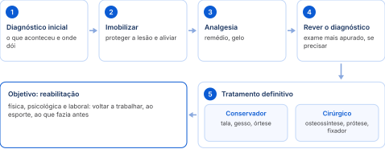
Na fratura, o tratamento é dividido em dois tempos. O primeiro acontece na urgência; o segundo pode ser no dia seguinte ou até uma semana depois, com calma.
Orientar expectativas é fazer o paciente entender o que tem e como vai ficar: vai ficar torto? Vai poder trabalhar? Um cirurgião que fratura a mão precisa saber o que esperar dela; há quem faça até seguro da mão por medo de perder o movimento. Às vezes a pessoa leva seis meses para entender bem o próprio diagnóstico.
“Você primeiro tira o risco de vida, você conforta o paciente, você tira da urgência. O paciente está com dor, não sabe o que tem, acha que vai morrer ou perder o braço. Você tira isso explicando o diagnóstico e imobilizando, dando analgésico e controlando o desconforto que ele tem.”
Há tempo para explicar. Exemplo: “o senhor teve uma lesão grau 2 nos ligamentos colaterais do tornozelo; vamos tratar sem cirurgia; deve ficar uns seis meses sem conseguir jogar futebol bem e depois volta devagar”.
Não há tempo para essa conversa: vários médicos e enfermeiros tentam fazer o diagnóstico e estabilizar um paciente grave. Ali, ter fila é ruim, porque outro paciente fica sem atendimento.
Contusão é a pancada que machuca só os tecidos e melhora em poucos dias. Entorse é a torção que estica ou rompe ligamentos; a lesão muscular segue o mesmo raciocínio, só que no músculo. Nos três, o primeiro tratamento é proteger e tirar a dor; operar depende da função que se perdeu, não só do tamanho da lesão.
Contusão é uma batida que faz hematoma e edema, mas machuca só os tecidos. Trata-se com coisas simples e normalmente melhora em dois a três dias. Tratamento: crioterapia (gelo), calor, anti-inflamatório não esteroide, repouso e outras medidas.
Contusão não é luxação. A imprensa confunde as duas o tempo todo, mas o médico não pode: contusão é a batida que machuca só o tecido; luxação é a articulação que sai do encaixe (capítulo 03).
No entorse, a articulação torce e os ligamentos se lesam. Todo entorse tem algum grau de lesão ligamentar.
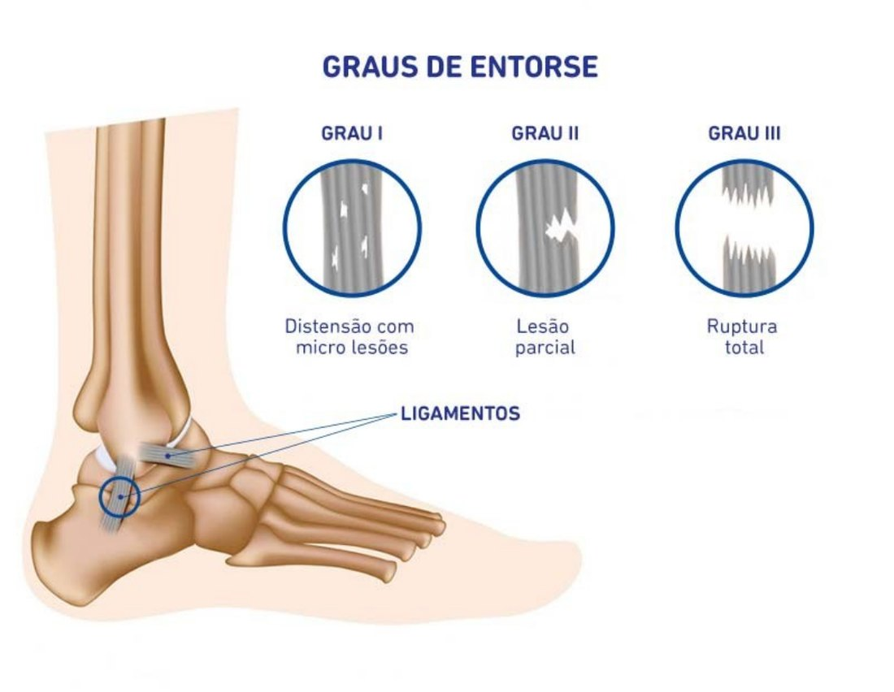
Imagem dos slides da aula.
A dor é subjetiva: a mesma lesão grau 2 pode doer muito em um paciente e pouco em outro. O jogador de futebol que recebe um spray e volta a jogar sentiu a dor “por necessidade”, e ainda teve o ganho secundário de um cartão amarelo para o adversário. O que define o tratamento é a função do ligamento, não só o grau:
O diagnóstico já está feito: lesão ligamentar. O tratamento inicial é a imobilização. Por isso a brincadeira de que quem passa no ortopedista sai imobilizado: é o tratamento inicial. A radiografia serve para ver se não houve fratura.
Imobilização, gelo e anti-inflamatório. Investigação inicial: radiografia. Investigação definitiva: ultrassonografia, ressonância magnética ou tomografia.
Exemplos: lesão ligamentar do tornozelo que ficou instável; lesão do ligamento cruzado anterior do joelho.
O raciocínio é o mesmo do ligamento. Lembrando: tendão é o ponto do músculo onde ficam a origem e a inserção. A classificação também tem três graus, pequeno, médio e grande:
Rompeu, é sempre cirúrgico? Nem sempre. Há goleiros veteranos com ruptura antiga do quadríceps que chutam muito bem. Já um atleta de alto rendimento com uma fissura num metatarso pode receber placa e parafuso. O melhor tratamento depende do diagnóstico e de quem tem esse diagnóstico.
Crioterapia, repouso, anti-inflamatório e imobilização; também se fala em células mesenquimais (células-tronco).
Exemplos: ruptura do bíceps braquial; ruptura muscular em atleta de alto rendimento.
Os dois servem para coisas parecidas no trauma, mas agem de modo diferente. Analgésicos de base no mercado são só dois, dipirona e paracetamol; o resto são fórmulas farmacêuticas. O diclofenaco é um exemplo de anti-inflamatório não esteroide.
Células mesenquimais e plasma rico em plaquetas (tira-se sangue, centrifuga-se e injeta-se) não são novidade. A notícia do jogador de um grande clube que tomou duas injeções e jogou a final é propaganda e não serve para a população em geral. Ainda não se sabe direito onde isso funciona bem. Para ser científico, é preciso o estudo duplo-cego: cem pacientes de cada lado, tratados sem saber quem recebeu o quê, e só depois comparar os resultados. Isso ainda não foi bem feito nesses tratamentos.
Na luxação, a articulação sai do encaixe: é emergência, porque precisa voltar ao lugar na hora. Na fratura, o osso quebra: em geral é urgência, e dá tempo de imobilizar, tirar a dor e planejar a cirurgia. Saber o nome importa, mas o essencial é nunca deixar uma emergência esperando.
“Meu medo é que vocês saiam daqui sem saber essa diferença.”
Para a articulação sair do lugar, rompem-se muitos ligamentos e a cápsula, as estruturas que a mantêm estável. Por isso a luxação causa grande instabilidade, dor, deformidade (fica torto) e pode lesar vasos e nervos que passam perto: no cotovelo, por exemplo, passam pela frente o nervo mediano e a artéria.
O tratamento imediato é reduzir: colocar no lugar. Depois, com calma:
Na fratura não há perda do encaixe da articulação (embora ela possa ser intra-articular, envolvendo a articulação): o osso perde a continuidade da cortical. Na radiografia, percorra a cortical procurando um degrau. No exame clínico, palpe delicadamente: onde quebrou, sangra, incha e fica irritado; é ali que se procura. Quando a deformidade é grande, nem precisa procurar.
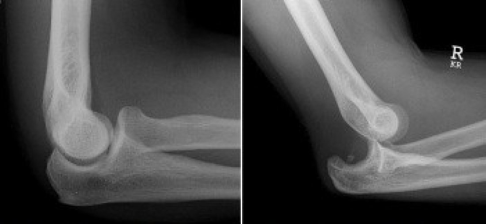
Luxação do cotovelo
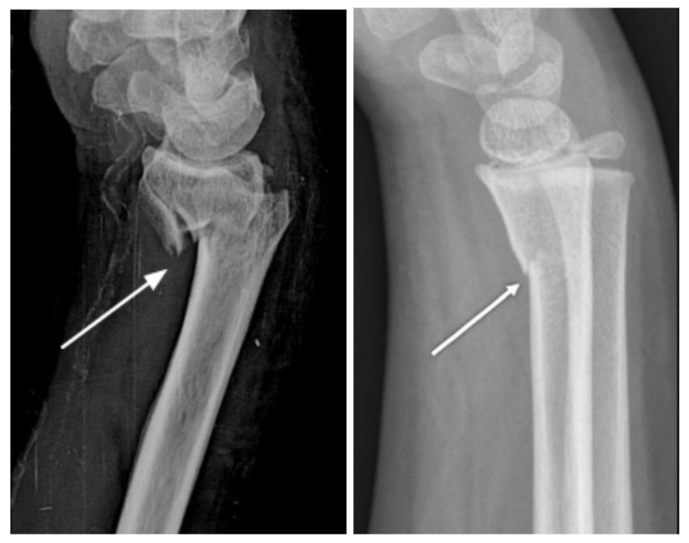
Fratura
Imagens dos slides da aula.
O que está escrito na ambulância? Emergência. Emergência é agir na hora: quem está na ambulância tem de resolver o problema ali. Um infarto é emergência, “senão ele morre”. Uma fratura de dedo não mata: é urgência, há um tempo para tratar. Entre um infartado e alguém com o dedo quebrado, a prioridade é o infartado.
A fratura é uma urgência eletiva, ou “eletivada”: planejada. Depois que o paciente está imobilizado e com analgesia, a cirurgia pode ser marcada, sem correria. No hospital, a classificação de risco por cores define quem pode esperar, às vezes até quatro horas.
O nome importa, mas na prática o erro grave é tratar uma emergência como se pudesse esperar: “deixa a fratura exposta ali, depois eu resolvo, vou atender cinco infartados antes”. Fratura exposta e luxação não esperam.
Quando a demanda passa do previsto, como no tombamento de um ônibus com muitas vítimas, um hospital sozinho pode não dar conta, e é preciso dar prioridades dentro da própria emergência.
“Quem faz trauma aprende até a dar prioridades dentro da emergência. O que é muito ruim, precisar fazer isso, mas isso consegue salvar um e não salvar o outro. Às vezes tem que ter até esse discernimento.”
Imobilizar é o primeiro tratamento de quase todo trauma ortopédico: tira a dor e segura o osso ou o ligamento enquanto cicatriza. Há formas provisórias, para transportar e aliviar, e formas definitivas, que tratam a fratura sem cirurgia.
Tala gessada, brace ou órteses, gesso e outros.
Placa e parafuso, haste intramedular, fio de Kirschner, fixador externo e artroplastias.
Gesso, placa, haste ou fixador têm a mesma função: fixar o osso para neutralizar as forças dos músculos, que têm origem e inserção dos dois lados da fratura. Sem boa imobilização, o paciente sente dor por meses (um osso leva meses para cicatrizar) e a função final pode ser pior. O osso não precisa ficar igual ao original: precisa respeitar alguns ângulos já conhecidos para cada osso. A redução não tem de ser perfeita na radiografia; tem de ser funcional.
É muito comum ouvir “órtese” no lugar de “prótese” e, mais ainda, “prótese” no lugar de “órtese”. O Capitão Gancho é o exemplo clássico de quem tem várias próteses: o gancho na mão, o olho de vidro e a perna de pau substituem partes do corpo. Brace é só o nome em inglês de órtese.
Quem orienta órteses e próteses é o fisiatra (a fisiatria), que, por exemplo, reabilita o amputado. Uma boa amputação já é planejada pensando na reabilitação e no tipo de prótese que o paciente vai usar.
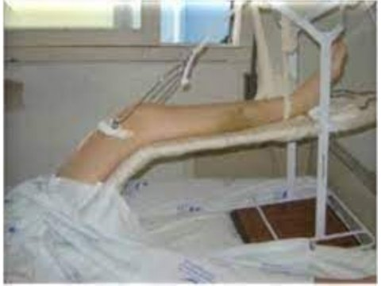
Tração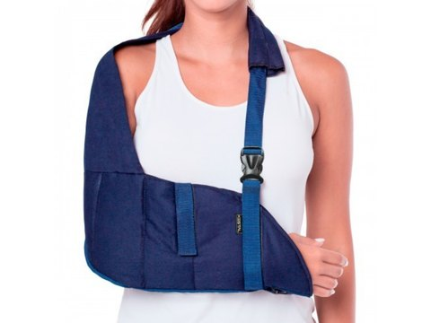
Tipoia de Velpeau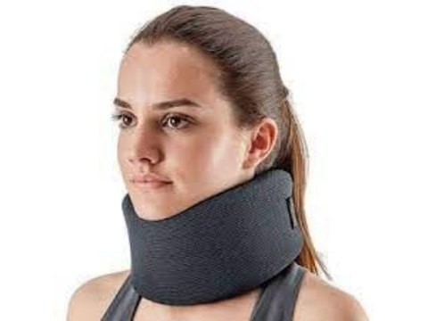
Colar cervical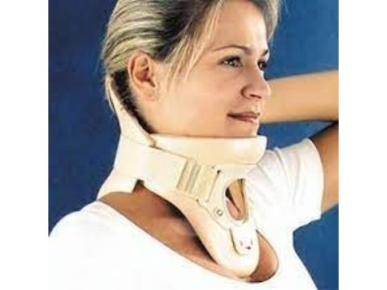
Colar rígido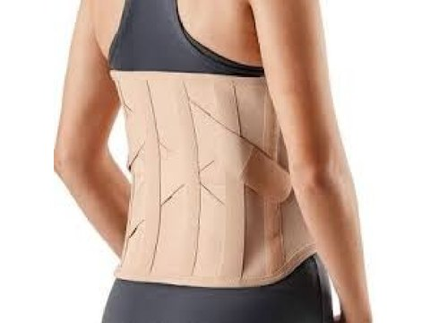
Colete de Putti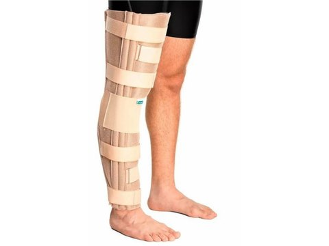
Brace (órtese)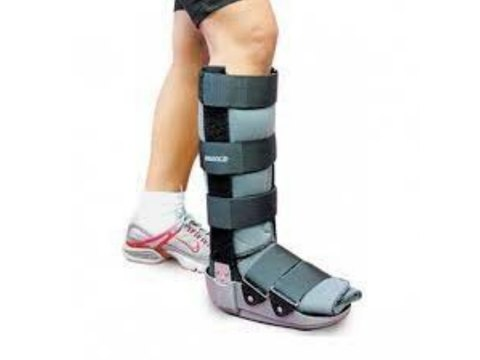
Robofoot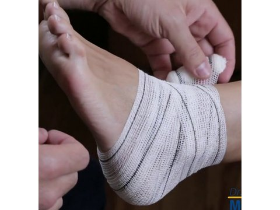
Enfaixamento de Jones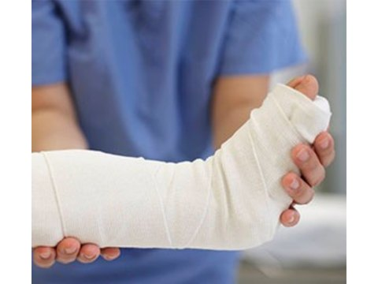
Tala gessada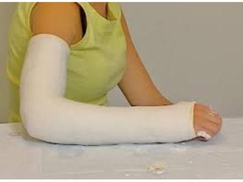
Gesso circular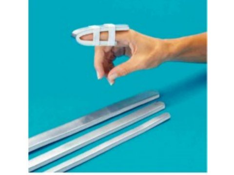
Tala metálica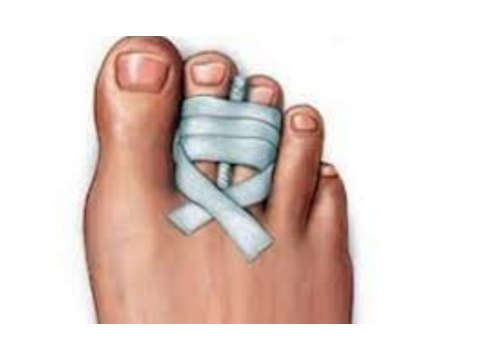
EsparadrapagemImagens dos slides da aula.
Quando a cirurgia é a melhor escolha, há dois caminhos: consertar o osso e prendê-lo com placa, parafuso, haste ou fio (osteossíntese), ou tirar a parte quebrada e pôr uma peça artificial no lugar (artroplastia, a prótese). O fixador externo, preso por fora da pele, segura rápido e deixa a cirurgia definitiva para depois.
Osteossíntese é abordar o paciente, reduzir a fratura (colocar no lugar) e fixá-la com pino ou outro material. Técnicas diferentes podem ter a mesma função. Na artroplastia, tira-se a parte quebrada e põe-se uma prótese: no quadril, a peça com a cabecinha simula a articulação e se encaixa numa outra peça fixada no acetábulo.
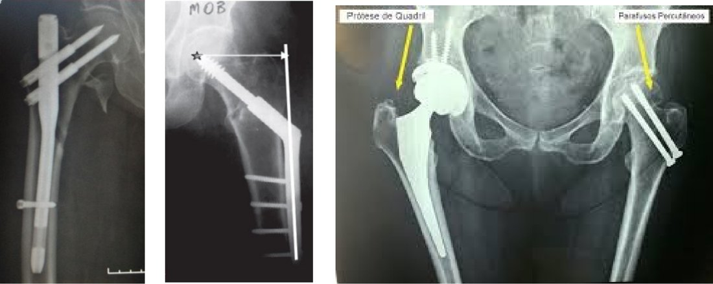
Imagem dos slides da aula.
A prótese é escolhida quando a fratura tem mau prognóstico, quando se espera que a osteossíntese dê errado. É o caso da fratura do colo do fêmur:
A escolha também depende do local onde se está e do dinheiro disponível; mas mais caro não significa, necessariamente, melhor tratamento.
Existem artroplastias de dedo (usada na rizartrose, a artrose da base do polegar), ombro, quadril, joelho e tornozelo. Antes de indicar, quatro perguntas: quanto tempo dura, se reabilita de verdade, se o paciente fica satisfeito e que efeitos colaterais pode trazer (inclusive uma segunda cirurgia). Capacidade de reabilitar, durabilidade e efeitos colaterais resultam no índice de satisfação do paciente.
Esses índices são em grande parte americanos; no Brasil se avalia pouco a satisfação, um bom tema para trabalho de conclusão de curso.
“A gente tem que procurar entender o que realmente vai fazer bem para esse paciente. Porque a indústria faz tudo o que a gente quiser. E ela inventa ainda.”
Hoje o fixador externo é usado sobretudo como imobilização provisória na chegada de emergência: é muito rápido de colocar (capítulo 06). Há o fixador circular e o linear; servem para coisas diferentes, e a escolha também depende do treinamento do cirurgião. Além de tratar fraturas, fazem alongamento ósseo e transporte ósseo: quem perdeu um pedaço de osso pode ter o osso cortado e “espichado” aos poucos.
É o mesmo princípio do aparelho de dente, que vai sendo apertado e puxa o dente para onde se quer. Onde o osso sofre compressão, ele é reabsorvido (pelo osteoclasto); do lado contrário, ele fabrica osso novo (pelo osteoblasto).
Para funcionar bem, a articulação precisa da cartilagem hialina. Quando a fratura entra na articulação, quebra o osso que sustenta a cartilagem e estraga a própria cartilagem; por isso a fixação precisa ser cuidadosa.
Os primeiros pinos de aço inventados para fixar fraturas; muda só o nome, conforme a espessura.
Politrauma é a pessoa com várias lesões ao mesmo tempo, quase sempre por acidente de trânsito. Primeiro se salva a vida e se estabiliza tudo depressa; o conserto definitivo de cada fratura vem depois. Na fratura exposta, quanto maior a ferida e a sujeira, pior o prognóstico.
Os acidentes devem ser vistos como uma doença, mais ou menos endêmica, como a dengue que passou pelo município: basta abrir a página policial para ver alguém gravemente ferido todo dia, e a mortalidade é muito alta. O problema é mundial. Jean Todt, que comandou a Ferrari por muitos anos e hoje é enviado especial da Organização das Nações Unidas, resumiu: “os acidentes rodoviários são uma pandemia silenciosa: sabemos que existe, sabemos como prevenir, mas continuamos a não fazer o suficiente”.
Na pelve em livro aberto, a pelve “abre” na frente e atrás: rompem-se os ligamentos sacroilíacos anterior e posterior, ou fratura-se o sacro. O sangramento pode ser grande, e colocar um fixador externo para fechar a pelve é emergência. Não dá para cauterizar diretamente esse sangramento: ao fechar o anel, o espaço diminui, a pressão sobe e o sangue fica estanque, limitado.
As fraturas são classificadas para que o mundo inteiro fale a mesma língua e possa comparar trabalhos científicos. Gustilo criou a classificação com os graus 1, 2 e 3; depois, com Anderson, ela foi melhorada e o grau III ganhou as letras A, B e C.
Resumo do grau III: mais de 10 cm de lesão de pele, ou grande contaminação (grande chance de infectar), ou grande esmagamento de partes moles, ou lesão vascular.
O Malawi fica no leste da África, vizinho de Moçambique e da Zâmbia. Pesquisadores acompanharam adultos com fratura exposta da tíbia, tratados como era costume lá, para saber como estavam um ano depois. Resultado: baixa função e baixa qualidade de vida no ano seguinte à lesão. A maioria das fraturas veio de acidentes de trânsito, e fixar a fratura depois de 5 dias quintuplicou a chance de infecção em comparação com tratar em até 2 dias. A conclusão do estudo: centralizar o tratamento cirúrgico ortopédico, com fixação definitiva precoce e haste intramedular nas lesões mais graves, pode melhorar os resultados.
Conhecendo a classificação, o resultado faz sentido: a função é baixa porque a doença é grave. Fratura exposta nunca tem resultado excelente; no mínimo fica a cicatriz. E isso é a perna, com um ano de evolução; a fratura do fêmur é ainda pior.
O trabalho de conclusão de curso é uma obrigação, mas o mínimo é aprender a ler um trabalho científico e valorizar quem o faz. Os americanos separam bem as duas alas: quem faz ciência e quem trabalha na parte executora. Aqui se tenta fazer as duas coisas, e às vezes as duas saem mal feitas.
A radiografia confirma o que o exame físico já apontou. Pede-se sempre pelo menos duas incidências, de frente (anteroposterior) e de perfil, e cada região tem a sua incidência especial. Na coluna, o perfil é a imagem que mais mostra.
Sempre olhar em duas incidências: uma fratura que quase não aparece de frente fica evidente no perfil.
Osso longo com as duas articulações: fêmur com quadril e joelho; perna com joelho e tornozelo. Se o filme não alcança, fazem-se duas radiografias.
Examine e encoste o dedo onde dói: é o exame que diz onde procurar.
Na dúvida sobre o que é normal, radiografe também o lado bom e compare.
No pronto-socorro, a meta da radiografia da coluna não é o diagnóstico fino: é perceber que existe uma lesão. Depois vem a hora da tomografia. Lembrando que a coluna tem três pilares (as três colunas).
No braço, cada região tem o seu truque: o ombro precisa da incidência axilar, o cotovelo tem uma incidência só para a cabeça do rádio, o antebraço esconde a lesão na outra ponta e o punho tem fraturas com nome próprio. Na criança, o osso se corrige sozinho com o tempo.
O detalhe do membro superior é o ombro, e o detalhe do ombro é a incidência axilar. O anteroposterior é fácil, mas exige um técnico bom: o ombro fica 15 graus para a frente, e essa angulação precisa ser respeitada. O perfil ajuda pouco (é meio bagunçado, mas mostra, por exemplo, uma fratura da escápula). O axilar, difícil de fazer, é o que diz se o ombro está luxado para a frente ou para trás, e algumas fraturas só aparecem nele. Faz-se com o braço aberto e o raio vindo de cima para baixo.
Acontece muito quando a pessoa cai de lado: ou quebra a clavícula ou faz a luxação acromioclavicular. É questão clássica de prova de ortopedia, e todo mundo quer saber o nome dos ligamentos: os ligamentos coracoclaviculares, conoide e trapezoide, que vão do processo coracoide à clavícula.
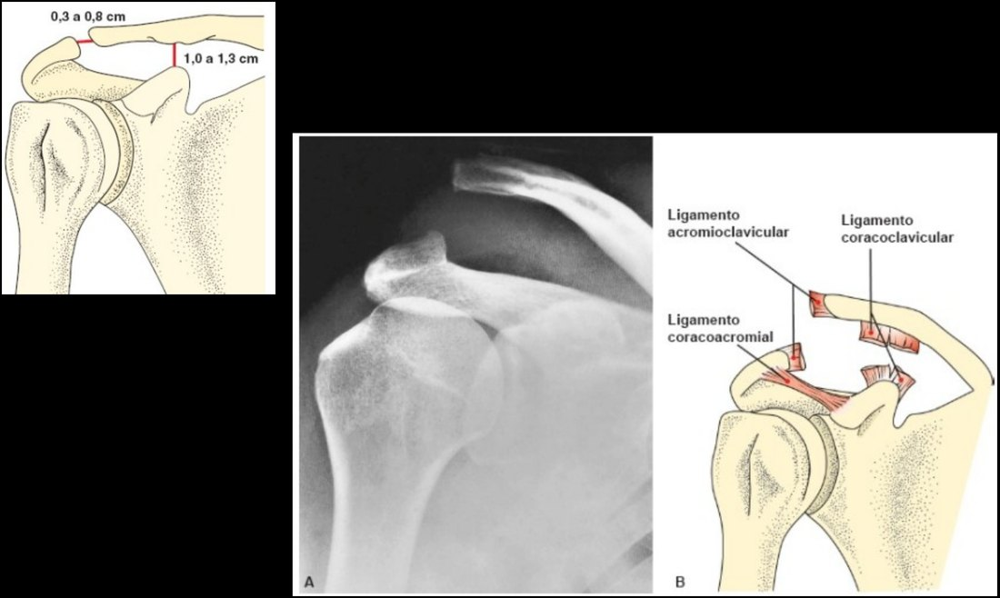
Imagem dos slides da aula.
O úmero se avalia com anteroposterior e perfil (exemplo clássico: fratura transversa). O cotovelo tem vários ossinhos especiais; na criança aparecem os centros de crescimento, como a cabeça do rádio e o capítulo, que precisam do estímulo da articulação para se formar direito, como na luxação do quadril da criança, em que o quadril não se forma direito.
O esperado, numa fratura do antebraço, é quebrarem as duas “canas”, o rádio e a ulna (o antigo cúbito). Se só um quebrou e encurtou, o que aconteceu com o outro, que está inteiro? Luxou na outra ponta. É uma lesão muito grave, porque arrebenta ligamentos; e quem olha só a radiografia, sem examinar, deixa passar a dor no outro lado.
O punho tem muitos ossinhos. Quem mais quebra é o escafoide; o semilunar pode luxar, e é uma lesão muito grave. No anteroposterior, os espaços entre os ossos são harmônicos: perder essa harmonia, ou ter dor que não melhora, é motivo para desconfiar. A radiografia com desvio ulnar mostra bem o escafoide, e o alinhamento do punho segue arcos (os arcos de Gilula).
É a fratura clássica do idoso que cai e tenta se segurar com a mão: o punho “torce para trás”. Uma prova nacional recente, como o Exame Nacional de Avaliação da Formação Médica, já pediu o nome dela.
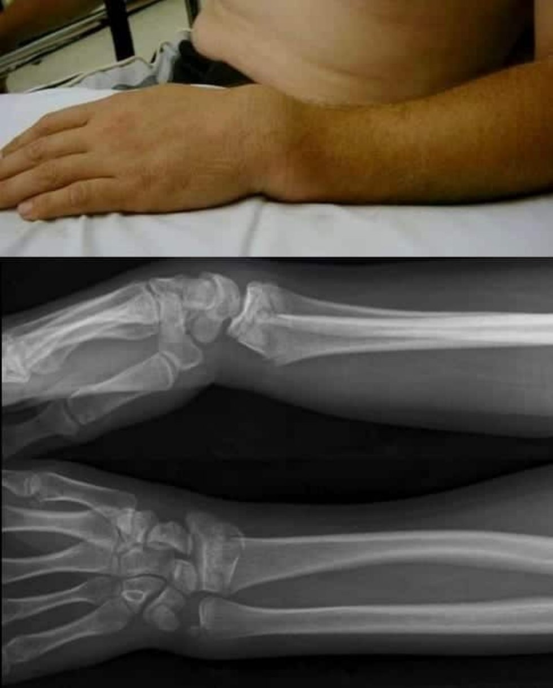
Imagem dos slides da aula.
Na criança, a fratura do punho com a placa de crescimento aberta pode ser tratada com tala de gesso: o periósteo é muito grosso, mantém o alinhamento e a fratura cicatriza rápido. E se ficar torto no perfil? Não precisa endireitar. Na última fase da consolidação, o remodelamento, a criança corrige com o tempo um grau de angulação aceitável, e o osso fica perfeito. Leva cerca de seis meses.
O verão é época de muitas fraturas de criança, e poucos adultos ficam com sequela grave no antebraço: a maioria das fraturas é tratada sem cirurgia. Hoje se tende a operar mais, até pela angústia de ver um bracinho torto por seis meses; mas é preciso pesar a anestesia e o pino, que pode infectar.
“Toda cirurgia tem pelo menos o risco da infecção.”
A luxação do semilunar às vezes passa despercebida. Se o alinhamento do carpo parece errado no anteroposterior, confira o perfil: o semilunar tem de estar encaixado no osso de cima.
É a fratura típica e exclusiva da criança: a cortical “amassa” em vez de quebrar, e a fratura quase não aparece. Já foi questão de prova. Nos Estados Unidos, quem a trata é o pediatra; aqui, o ortopedista.
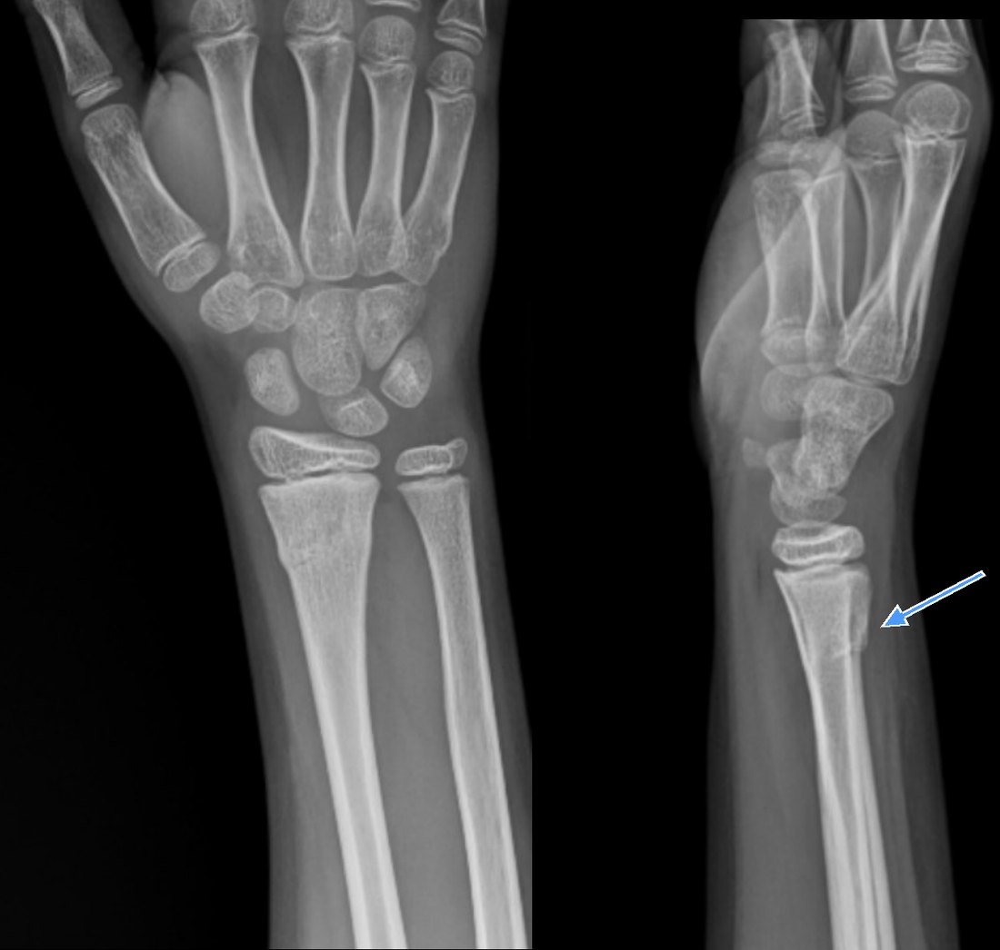
Imagem dos slides da aula; seta nossa.
Na perna, as lesões que mais assustam são as que sangram ou cortam a circulação: a pelve aberta e a luxação do joelho. O fêmur e a perna precisam aparecer inteiros, e a fratura da base do quinto metatarso, no pé, só é achada por quem palpa.
No anteroposterior da pelve, lembre sempre o que é anterior e o que é posterior. No perfil do quadril, o principal é reconhecer o acetábulo, a cabeça do fêmur, o colo e a região trocantérica; o resto é pelve. Alar e obturatriz são as duas oblíquas do quadril, feitas para ver as fraturas do acetábulo, no pilar anterior e no posterior.
Os ligamentos de trás da pelve são os mais fortes do corpo, e ali fica o plexo venoso. A pelve é um anel: para abrir de um lado, normalmente abre do outro. Quando rompe na frente e atrás, a instabilidade é grande, e são essas as fraturas que lesam vasos. A sínfise púbica, na frente, é um ligamento mais simples e sangra pouco; atrás, o sangramento é grande.
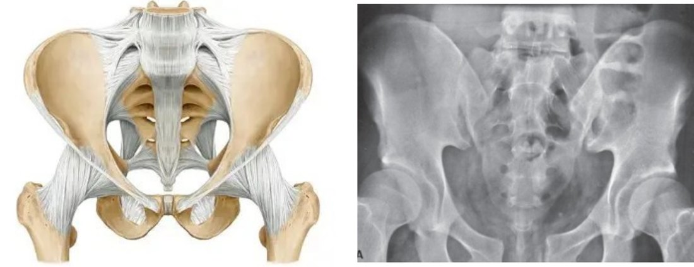
Imagem dos slides da aula.
No exame clínico: o motociclista chega acidentado e consegue conversar. Aperte a sacroilíaca, atrás. Mesmo quando a lesão maior é na frente, ela é tão grande que costuma doer atrás. Dor ali faz desconfiar de fratura do sacro ou da pelve (um pouco mais acima, palpe a lombar), dar mais atenção e talvez pedir um exame mais específico.
Algumas fraturas do colo se veem bem, outras mal. Quanto mais deslocada, mais ela lesa a circulação da cabeça do fêmur, que corre de baixo para cima (retrógrada). As fraturas do colo e trocantéricas são urgências: dá para esperar 24 a 48 horas, mas não muito mais, porque o paciente morre mais.
Urgência, não emergência: operar sem demora.
Chamar a fratura trocantérica de “fratura de colo” é muito frequente, até entre ortopedistas. São fraturas diferentes, com prognóstico e tratamento diferentes (capítulo 05). E as duas são urgência, não emergência.
O problema do fêmur é radiografá-lo inteiro: o filme não alcança o fêmur de um adulto grande. Por isso se fazem imagens pegando o joelho e o quadril. É frequente ter uma fratura no meio do fêmur e outra no colo que não aparece: a do colo, dentro da cápsula, incomoda menos que a outra e passa despercebida. Na criança, com o esqueleto imaturo, distingue-se a fratura cominutiva (vários fragmentos) da oblíqua curta, simples, sem precisar de tomografia.
O joelho tem três ossos, e a patela (rótula), na frente, é muitas vezes esquecida; o perfil a mostra bem. O axial de patela avalia a relação dela com o fêmur, mas é difícil de fazer em quem está com fratura. Outras fraturas da região: fêmur distal, platô tibial (a parte de cima da tíbia) e patela, que de frente quase não aparece e no perfil fica evidente.
São quatro, nem mais nem menos; na residência, os residentes eram desafiados com “cinco” e nunca acertavam.
A ponta óssea no lugar onde o contorno deveria ser redondinho.
O osso logo abaixo da cartilagem fica bem branco.
O espaço da articulação diminui, um lado menor que o outro; vê-se melhor com a radiografia em pé.
Buracos pretos dentro do osso: a cartilagem se lesa e o líquido sinovial entra no osso.
A luxação da patela com luxação do joelho é uma lesão gravíssima. Por quê? Atrás do joelho passa a artéria poplítea, presa num ligamento, que não suporta tanto movimento: quando o joelho luxa, normalmente a poplítea se lesa.
Na perna, anteroposterior e perfil fazem bem o diagnóstico, sempre com joelho e tornozelo. O tornozelo é uma mortalha, um encaixe: quando o tálus sai desse encaixe, desconfie de fratura.
Fratura muito frequente, que passa despercebida. O paciente chega com o pé inchado e recebe uma radiografia de tornozelo, porque ninguém examinou nem foi ver onde dói. O tornozelo está só inchado; mas, ao palpar a base do quinto metatarso, a dor é forte. Não é preciso apertar com força: pode ser delicado.
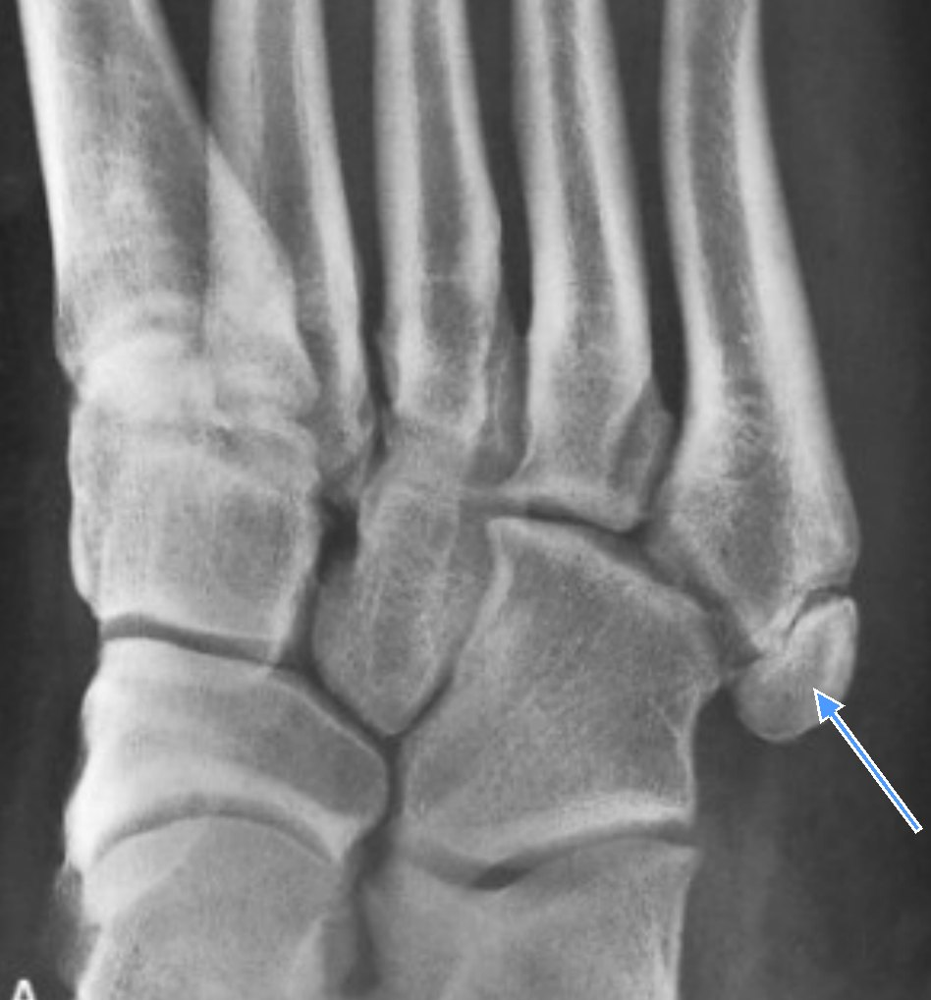
Imagem dos slides da aula; seta nossa.
Pé inchado depois de torcer: antes de pedir a radiografia do tornozelo, palpe a base do quinto metatarso. Quem não examina pede o exame errado e não acha a fratura.
“Essa é a nossa última aula, então queria agradecer à turma. Não foi das mais chatas, né? Espero que tenham boa nota.”
Contusão × luxação: contusão é a batida que machuca só os tecidos e melhora em 2 a 3 dias; luxação é a perda total do encaixe da articulação, com instabilidade, dor, deformidade e risco para vasos e nervos.
Entorse: grau 1 microlesões, grau 2 lesão parcial, grau 3 ruptura total. Tratamento inicial: imobilização; a radiografia afasta fratura. Operar depende da função do ligamento.
Emergência × urgência: emergência é agir na hora (infarto, luxação, fratura exposta, lesão vascular, síndrome compartimental); urgência tem tempo (fratura: imobiliza, tira a dor e programa).
Órtese × prótese: órtese ajuda e apoia (brace, colete, colar); prótese substitui uma parte do corpo (gancho, olho de vidro, cristalino, prótese de quadril).
Gustilo e Anderson: I menos de 1 cm, limpa; II mais de 1 cm, contaminação moderada; III mais de 10 cm, ou grande contaminação, esmagamento ou lesão vascular (A ainda cobre o osso, B perde a cobertura, C tem lesão vascular a reparar).
Radiografia: sempre duas incidências; osso longo inteiro, com as duas articulações (fêmur com quadril e joelho; perna com joelho e tornozelo).
Ombro: anteroposterior, perfil e axilar; o axilar diz se a luxação é para a frente ou para trás.
Acromioclavicular: queda de lado; ligamentos coracoclaviculares, conoide e trapezoide.
Antebraço: um osso quebrado e encurtado, o outro luxou: Galeazzi (rádio quebra, ulna luxa no punho), Monteggia (ulna quebra, cabeça do rádio luxa). Trauma direto quebra sem encurtar.
Colles: idoso que cai com a mão e o punho vai para trás (dorso em garfo).
Torus: a cortical “amassa”, só na criança; quase não aparece de frente.
Colo do fêmur e trocantérica: urgência, operar em 24 a 48 horas. Trocantérica não é fratura de colo.
Artrose: quatro sinais, osteófito, esclerose subcondral, pinçamento articular e cisto subcondral.
Luxação do joelho: lesão gravíssima; pense na artéria poplítea.
Base do quinto metatarso: frequente e despercebida; palpe antes de pedir exame; melhor incidência, a oblíqua do pé.